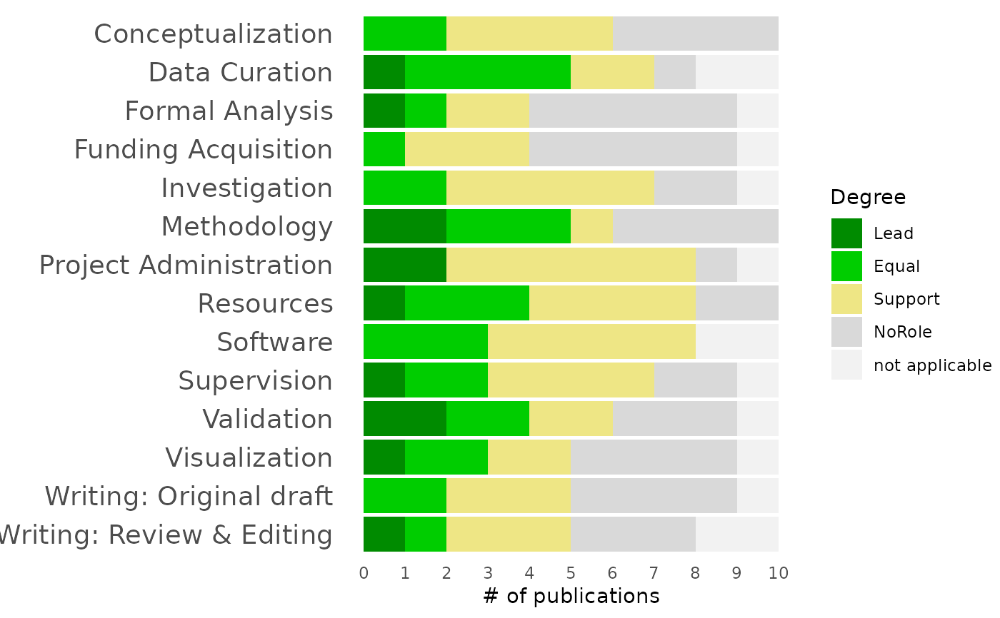
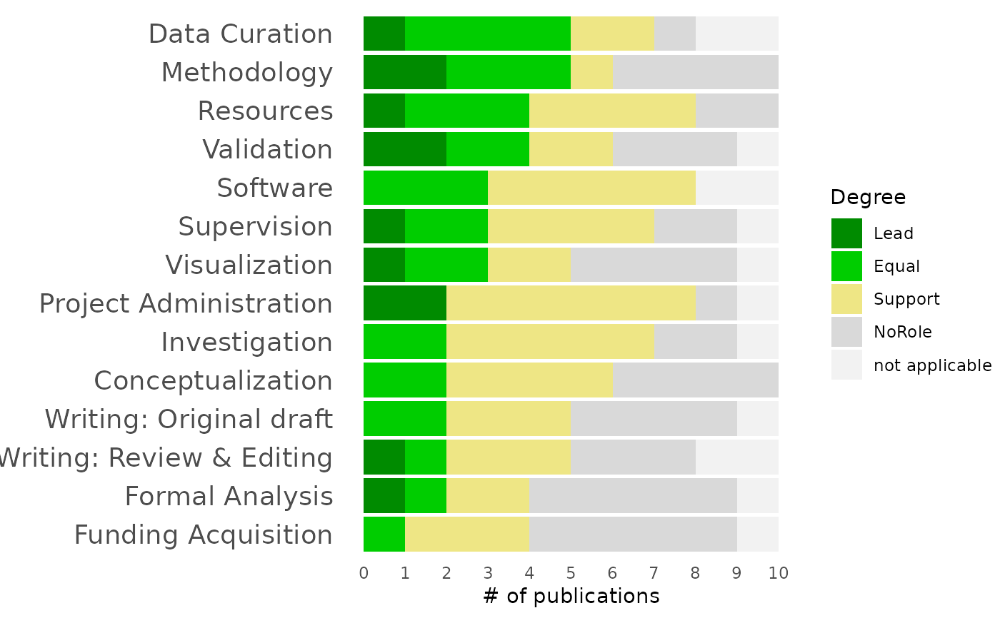

Display a barchart with CRediT roles
Arguments
- credit_dat
The raw data in the format of the
applicant()$creditfield. This is a data frame with two relevant columns:Role(the CRediT role) andDegree(one of "Lead", "Equal", "Support", "NoRole", or "not applicable"). Roles can appear multiple times (e.g., for multiple papers) and will be aggregated in the plot.- ordered
If
FALSE, keep alphabetical order. IfTRUE, sort by strongest contribution.
Examples
credit_dat <- data.frame(
Role = rep(c("Conceptualization", "Data Curation", "Formal Analysis",
"Funding Acquisition", "Investigation", "Methodology",
"Project Administration", "Resources", "Software", "Supervision",
"Validation", "Visualization", "Writing: Original draft",
"Writing: Review & Editing"), 10),
Degree = sample(c("Lead", "Equal", "Support", "NoRole", "not applicable"),
size=140, replace=TRUE)
)
credit_barchart(credit_dat)

credit_barchart(credit_dat, ordered=TRUE)
